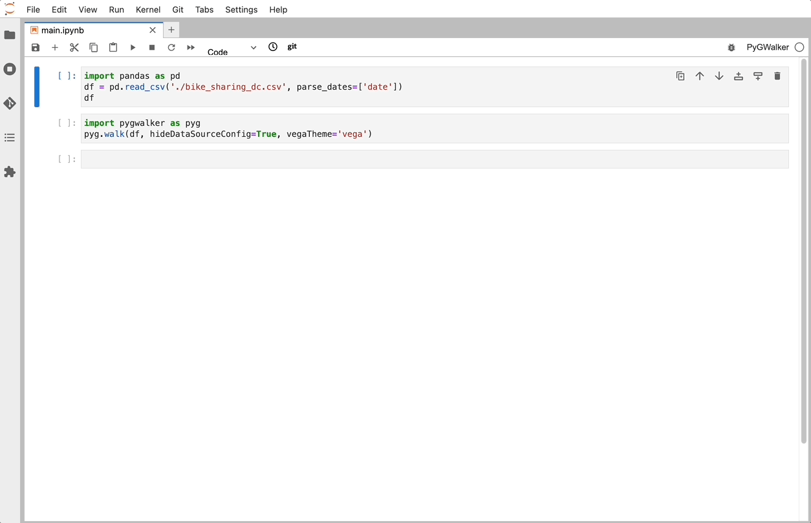

from deepchecks.tabular.suites import model_evaluation
suite = model_evaluation()
result = suite.run(train_dataset=train_dataset, test_dataset=test_dataset, model=model)
result.save_as_html() # replace this with result.show() or result.show_in_window() to see results inline or in windowTo run this as slides use the following command in the terminal:
nbconvert posts/2023-03-20-deepchecks/index.ipynb --to slides --post serveN.B. this blog is originally a presentation, hence it’s not really written in the best way. Potentially I’ll rewrite into a true blog in the future.
Data Validation & Exploration
Today we’ll dive into automated Data Validation and Data Exploration.
Every day we work through a multitude of data using heurestics, statistics and many tools. But is there better tools out there? Is there a way to automate some of the process to put greater emphasis on the important things?
Data Validation Tools
There is a few tools.
- Deepchecks Tests for Continuous Validation of ML Models & Data
- ydata-profiling (previously _pandas-profiling) Create HTML profiling reports from pandas DataFrame objects
- greatexpectations Always know what to expect from your data.
- pandera A Statistical Data Testing Toolkit
We’ll focus on a few discussion points today
- When does it make sense to introduce this type of tool?
- How do you use this type of tool today?
- How can it be improved?
- Can it be used as part of Data Analysis?
- Can it be used in any other part of the process?
(This was for the presentation/‘journal circle’)
Introduction
As we all know to be true data is incredibly important when developing Machine Learning Applications.
Shit in, shit out
First we’ll make a quick introduction to each tool and their strengths.
Second I’ll share a few use-case examples. (didn’t have time to complete)
Finally we’ll end up discussing how we can use, or use, these tools.
Deepchecks

Deepchecks is a Python package for comprehensively validating your machine learning models and data with minimal effort. This includes checks related to various types of issues, such as model performance, data integrity, distribution mismatches, and more.
Data Formats
Deepchecks supports the following formats:
- Tabular
- Computer Vision
- NLP (text)
Example
Types of checks
The types of checks are divided into 3 variants,
Running a Deepcheck
Either you run a full suite or a single feature. You choose!
Full Evaluation Suite
Single Validation
from deepchecks.tabular.checks import FeatureDrift
import pandas as pd
train_df = pd.read_csv('train_data.csv')
test_df = pd.read_csv('test_data.csv')
# Initialize and run desired check
FeatureDrift().run(train_df, test_df)ydata-profiling
ydata-profiling, previously pandas-profiling is a tool that allows you to easily profile a dataset quickly and grok the data.
Key features
Type inference: automatic detection of columns’ data types (Categorical, Numerical, Date, etc.)
Warnings: A summary of the problems/challenges in the data that you might need to work on (missing data, inaccuracies, skewness, etc.)
Univariate analysis: including descriptive statistics (mean, median, mode, etc) and informative visualizations such as distribution histograms
Multivariate analysis: including correlations, a detailed analysis of missing data, duplicate rows, and visual support for variables pairwise interaction
Time-Series: including different statistical information relative to time dependent data such as auto-correlation and seasonality, along ACF and PACF plots.
Text analysis: most common categories (uppercase, lowercase, separator), scripts (Latin, Cyrillic) and blocks (ASCII, Cyrilic)
File and Image analysis: file sizes, creation dates, dimensions, indication of truncated images and existence of EXIF metadata
Compare datasets: one-line solution to enable a fast and complete report on the comparison of datasets
Flexible output formats: all analysis can be exported to an HTML report that can be easily shared with different parties, as JSON for an easy integration in automated systems and as a widget in a Jupyter Notebook.
The report contains three additional sections:
- Overview: mostly global details about the dataset (number of records, number of variables, overall missigness and duplicates, memory footprint)
- Alerts: a comprehensive and automatic list of potential data quality issues (high correlation, skewness, uniformity, zeros, missing values, constant values, between others)
- Reproduction: technical details about the analysis (time, version and configuration)
How to use
ydata-profiling is incredibly simple to use!
All that needs to be done is
profile = ProfileReport(df, title="Profiling Report")Examples found on github.
For a specific example see titanic.
Great Expectations (GX)
Great Expectations (GX) helps data teams build a shared understanding of their data through quality testing, documentation, and profiling.
GX is a well-known tool with a huge community. This means that there’s multiple plugins in other tools to support this framework.
It support things like Snowflake, BigQuery, Spark, Pandas, ..!
It’s easy to use and gives Data Documentation of the tests which can be saved in S3 or other places giving everyone a possibility to view and share these!
Example of GX
# great expectations check example
# can also be JSON
expect_column_values_to_be_between(
column="passenger_count",
min_value=1,
max_value=6
)Even has Data Assistant to build automated checks based on Golden Dataset!
There’s > 50 built-in expexctations and >300 including community added!
Our stakeholders would notice data issues before we did – which eroded trust in our data
pandera
- Define a schema once and use it to validate different dataframe types.
- Check the types and properties of columns/values.
- Perform more complex statistical validation like hypothesis testing.
- Seamlessly integrate with existing data analysis/processing pipelines via function decorators.
- Define dataframe models with the class-based API with pydantic-style syntax and validate dataframes using the typing syntax.
- Synthesize data from schema objects for property-based testing with pandas data structures.
- Lazily Validate dataframes so that all validation rules are executed before raising an error.
- Integrate with a rich ecosystem of python tools like pydantic, fastapi and mypy.
Pandera Dictionary Schema
import pandas as pd
import pandera as pa
# data to validate
df = pd.DataFrame({
"column1": [1, 4, 0, 10, 9],
"column3": ["value_1", "value_2", "value_3", "value_2", "value_1"],
})
# define schema
schema = pa.DataFrameSchema({
"column1": pa.Column(int, checks=pa.Check.le(10)),
"column3": pa.Column(str, checks=[
pa.Check.str_startswith("value_"),
pa.Check(lambda s: s.str.split("_", expand=True).shape[1] == 2)
]),
})
validated_df = schema(df)
print(validated_df)Pandera (Pydantic) Class Schema
from pandera.typing import Series
class Schema(pa.DataFrameModel):
column1: Series[int] = pa.Field(le=10)
column2: Series[float] = pa.Field(lt=-1.2)
column3: Series[str] = pa.Field(str_startswith="value_")
@pa.check("column3")
def column_3_check(cls, series: Series[str]) -> Series[bool]:
"""Check that column3 values have two elements after being split with '_'"""
return series.str.split("_", expand=True).shape[1] == 2
Schema.validate(df)Final Comparison Table
Comparing the tools this is how they can be used, and if I really like using them :wink:
| Tool | Data Stores (Pandas, Spark, DB, Other) | Steps (Analysis, Training, Production, Non-ML) | Drift | Hypothesis | Data Generation | Data Types | Personal Favorite(s) |
|---|---|---|---|---|---|---|---|
| deepchecks | ‚úÖüòê‚ùå‚úÖ | ✅✅✅✅ | ✅ | ❌ | ❌ | ❌ | ✅ |
| ydata-profiling | ✅✅✅❌ | ✅❌❌✅ | ✅ | ❌ | ❌ | ✅ | ✅ |
| greatexpectations | ✅✅✅✅ | ❌❌✅✅ | ❌ | ❌ | ❌ | ✅ | üòê |
| pandera | ✅✅⏳✅ | ❌✅✅✅ | ❌ | ✅ | ✅ | ✅ | ✅ |
Bonus: Additional Great Frameworks
- Fairlearn Fairlearn is an open-source, community-driven project to help data scientists improve fairness of AI systems.
- Torchdrift
- alibi-detect
- Evidently (superb)
Bonus 2: PyGWalker
I found a new tool lately called PyGWalker which was really cool! It cannot handle really large data, but it’s excellent for smaller datasets :)
Turn your pandas dataframe into a Tableau-style User Interface for visual analysis
